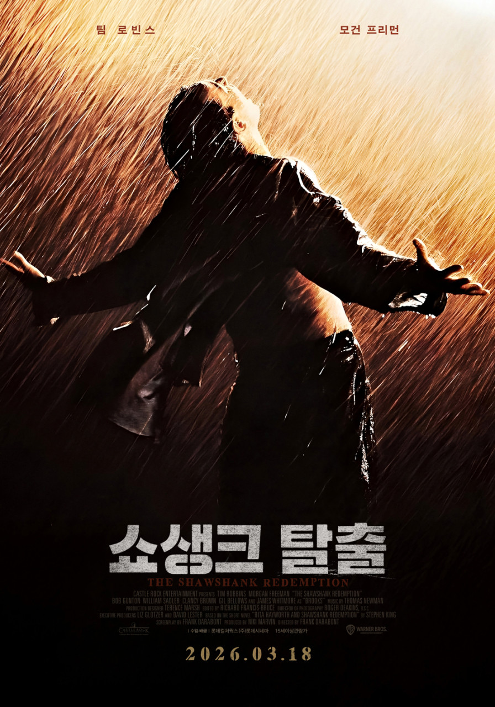
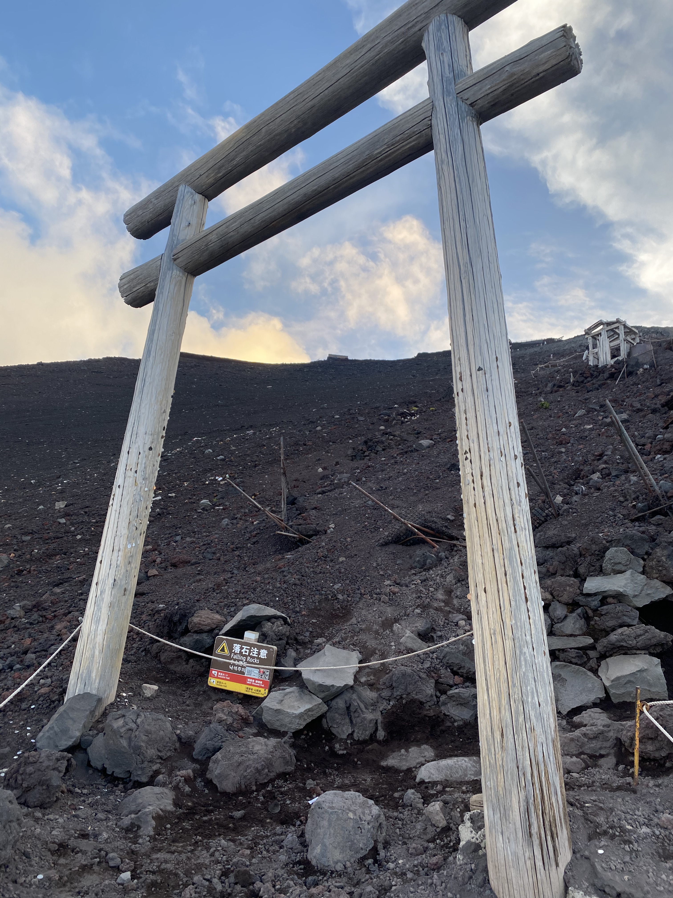
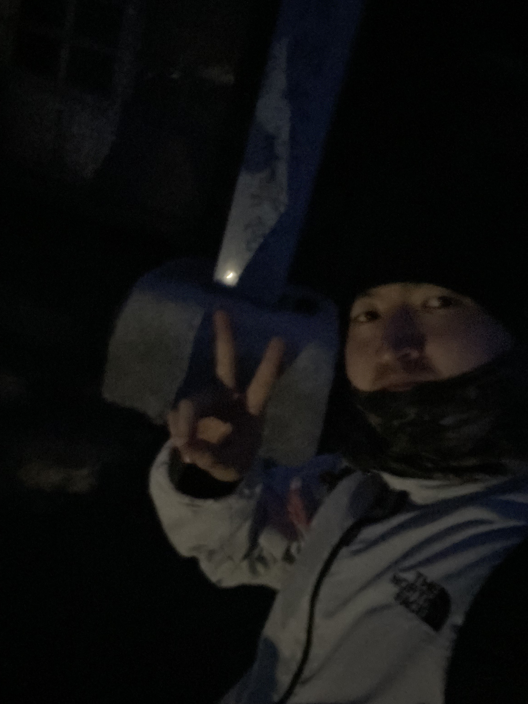
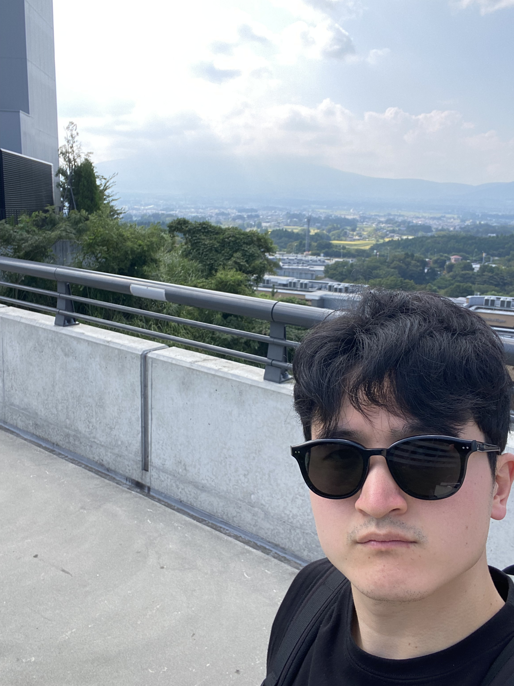
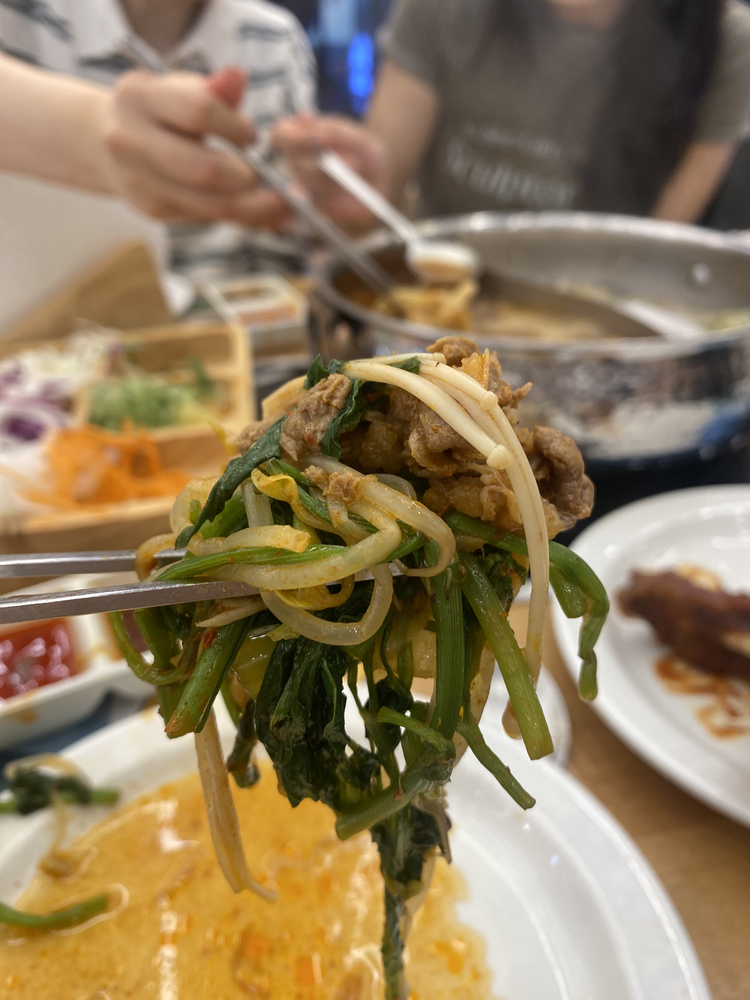
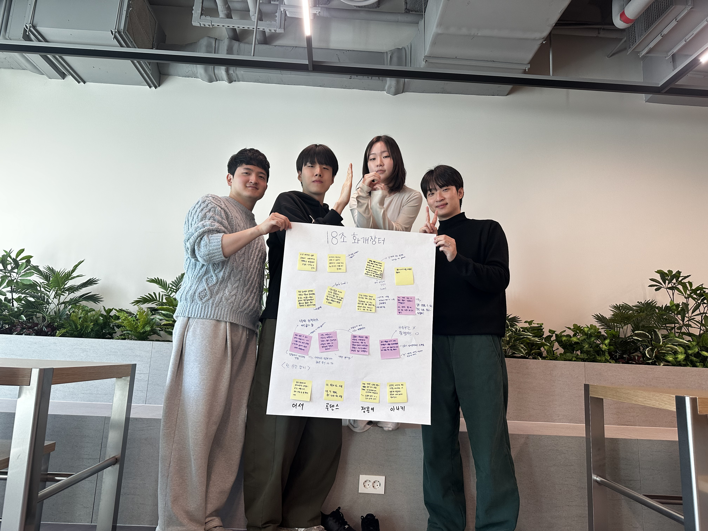
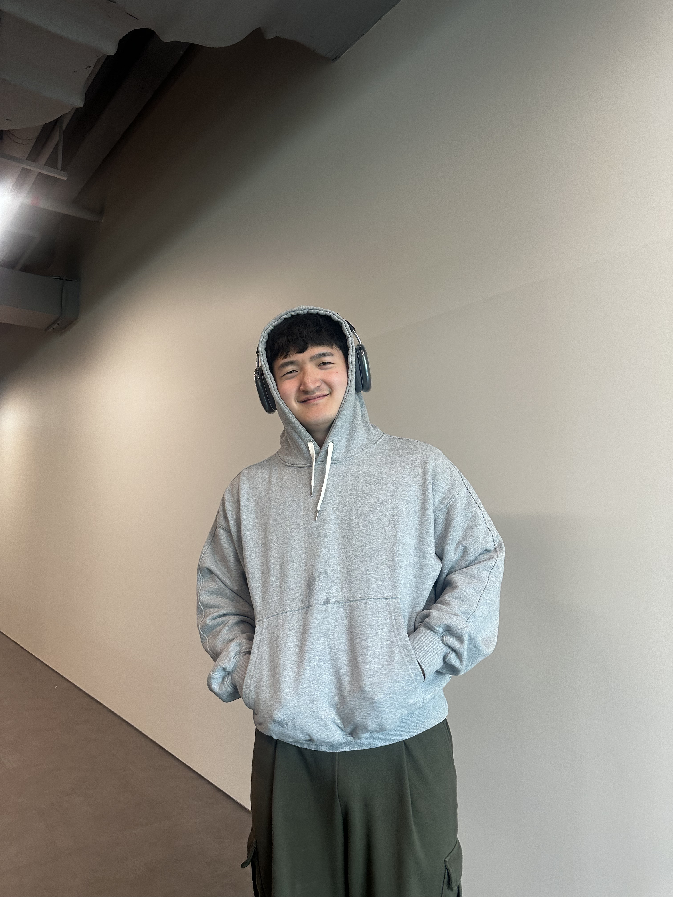

쇼생크 탈출
억울한 누명을 쓰고 투옥된 앤디 듀프레인이 무려 20년이라는 긴 세월 동안 희망을 잃지 않고 자유를 향해 나아가는 과정을 그린 명작입니다. "희망은 좋은 거예요. 가장 좋은 것일지도 몰라요. 그리고 좋은 것은 절대 사라지지 않습니다."
usher in the era of Usher
어셔에게 어셔옵셔
배움을 즐기는 백엔드 개발자
우아한 테크코스 8기 진행 중...
GitHub| 이름 | 박진우 |
|---|---|
| MBTI | ENTJ |
| 취미 | 운동, 독서 |
| 좋아하는 음식 | 삼겹살, 미나리, 샤브샤브 |
후지산 정복







억울한 누명을 쓰고 투옥된 앤디 듀프레인이 무려 20년이라는 긴 세월 동안 희망을 잃지 않고 자유를 향해 나아가는 과정을 그린 명작입니다. "희망은 좋은 거예요. 가장 좋은 것일지도 몰라요. 그리고 좋은 것은 절대 사라지지 않습니다."
정말 재밌어요!
오늘 새롭게 배운 것들을 기록합니다.
View단과 Domain단을 격리시키는 것이 Controller의 역할이야.